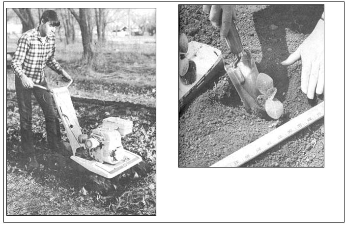
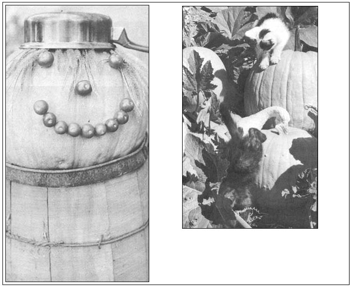

Pumpkins, Are For Fun, Food & Funds
By Jack Roland Coggins
September/October 1972
Pumpkins are for laughter - for Jack-O-Lanterns and Halloween - during the cool, overcast days of autumn.
Pumpkins are for pies . . . all winter long.
And pumpkins are for extra cash: their sales bring in dollars when most other money crops are gone. A fellow homesteader put it this way: "Pumpkins are our ace-in-the-hole for raising Christmas dollars. Ole Jack brings in extra funds just in time to take advantage of the countless pre-holiday sales." T he big, beautiful, bright orange fruit is easy to grow, too. It needs about 120 days to reach maturity so, in most areas, plantings around May 20th will bring in crops during late September . . . before damaging frosts and just in time for Halloween.
Gardeners in areas where the growing season is very short should start seeds indoors three to four weeks before the weather's right for outdoor planting. Roots must not be disturbed so be sure to start your pumpkins in containers that can be set directly in the ground . . . peat pots or peat pellets, for example.
When seeding pumpkins outdoors, don't tire yourself by spading up every square foot of soil. Only the area where the roots will grow needs special preparation. Simply turning the earth in hills about two feet in diameter and spaced three feet apart should be quite sufficient, although I find that digging lots of manure or compost into each mound definitely helps produce larger, more perfect specimens for the Halloween market.
When I seed pumpkins with other crops, I leave a three-foot, plowed and implanted border for my future Jack-O-Lanterns and pies. Once I've planted the fruit every three feet down the strip, the rangy vines usually spread out from the ribbon of tilled soil and deposit their bright orange treasures-high and dry-on the adjoining unplowed ground. Pumpkin vines, you'll find, wander happily over rocky terrain, across lawns and even through weeds.
Place about three or four pumpkin seeds an inch deep in each hill and, when the young plants are well-established, put a thick mulch around them to keep down weeds that would otherwise rob the developing vines of moisture and food. This mulch should be tight, mat-like (packed grass clippings are fine) and stuffed closely around the stalks to shut off any passages through which squash bugs might gain entry to the pumpkins' roots. The squash bug is a persistent, plant-killing pest and the big ones like to live around the base of the vines and come up to lay eggs on the underside of the leaves.
Some growers use the chemical insecticide Sevin 50-50 to control this bug but you can take other, more natural preventive measures against its infestation.
In the first place, I'm sold on the fundamental natural gardening formula: a strong and healthy plant will survive normal insect attacks and-in the majority of cases-yield a fine crop. Well-worked soil, plentiful organic fertilizer, regular watering and a good mulch-in other words-tend to make pumpkin vines strong, healthy and resistant to insect damage and disease.
If squash bug infestation of your pumpkins does begin to get out of hand, though, I've found that a soap and water solution spray will kill the little pests (although it won't control them). Some gardeners claim they protect their pumpkins from the bugs by interplanting onions and garlic with the vines . . . but the idea proved ineffective when I tried it. A spray of garlic and onion juice mixed with water does, however, deserve further study.
One word of warning when experimenting with watered down solutions of asparagus, elderberry, onion or garlic juice as natural insecticides: never, never test a mixture on your entire crop! It could prove disastrous. Try very weak solutions first, spray in the evenings rather than mornings or during the heat of the day, treat only a single infested plant or a few leaves at first and watch the doctored area closely for a few days.
If the sprayed plant or leaves show signs of wilting, drying or scarring, your solution is too harsh and must be discarded. Cut your pumpkins from their vines after the first light frost. They'll both look and store better if you leave the stems on and firm specimens-stashed away in a dry room or cellar where the temperature can be maintained at around 50°F-will keep well until spring.
I once made the mistake of storing pumpkins in a cold garage and quickly learned that the fruit will rot if allowed to freeze and thaw. In this case I saved the harvest by immediately (before they thawed) cutting up the pumpkins, cooking them and putting them in the freezer. Now, as you might suspect, I make sure our pumpkin storage area remains safely above freezing.
Pumpkins intended for Jack-O-Lantern use can be sold at roadside or in the front yard if displayed with signs indicating their price range. A little showmanship can really help move the fruit and a scarecrow, set up for atmosphere, has been known to substantially increase sales.
One homesteader I know sells hundreds of pumpkins each Halloween by displaying them as "ready-made" seasonal faces. "I don't carve them," he told me, "because-if I did-they'd spoil. I just make the faces with different vegetables or whatever strikes my fancy . . . even fishing lures. These ready-made 'jacks' sell faster and at better prices than my undecorated stock."
Another friend grows a number of huge pumpkins (up to 100 pounds each) by planting the Big Max variety, fertilizing gently three or four times during the season and regularly pruning off all but three or four of the largest fruits from each vine.
"We don't sell as many of these giants as we do the more convenient sizes," he notes, "but our oversized specimens are great attention-getters. Banks, stores and other businesses pay premium prices for the whoppers and use 'em as the focus of eyepopping Halloween displays. We made our initial sales with a few phone calls and, now, a number of businesses have standing orders with us for an established delivery date of a monster pumpkin each year."
 LEFT: Rich, mellow soil that has a high humus content is well-suited to the raising of pumpkins. If you have a tiller or plow, turn autumn leaves and animal manure into the whole pumpkin patch the fall before planting in the spring. If you work with a spade, prepare hills two or three feet in diameter the same way. ABOVE: Pumpkin plants may be started indoors in peat pots or similar ""plantable"" containers but?unlike tomatoes, peppers and cabbages ? their roots must not be disturbed when the starts are transplanted to the garden or field. |
 LEFT: ""Jack"" Hayseed has a face made of cherry tomatoes stuck on with pins. Pumpkins mean autumn fun and we like to see how many novel faces we can come up with. Such decorations add noticeably to roadside sales of the plump fruit too! ABOVE: Medium to medium-large pumpkins sell best for Jack-O-Lantern use. Big Max, Connecticut Field and Tricky Jack (which grows on a compact bush instead of rangy vines) are all good. Monster pumpkins, grown by nipping off all but three or four fruit from each regularly fertilized Big Max vine, are easy to sell for store window displays. |
 |